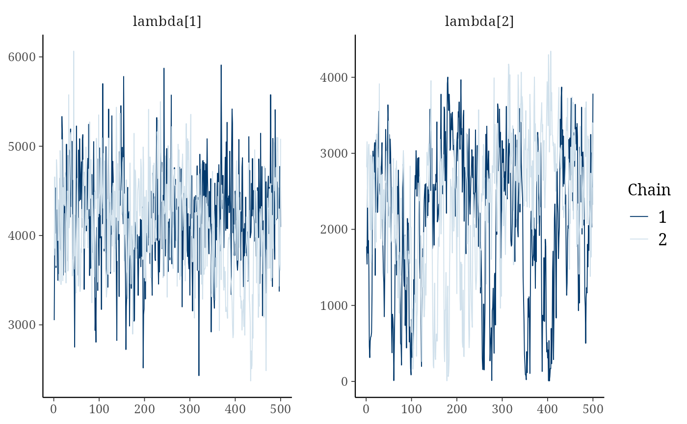

The draws of bayes_ammi() are a coda::mcmc.list (component draws). These methods hand
them to the packages posterior and coda; every plot of bayesplot (mcmc_trace(),
mcmc_areas(), mcmc_rank_overlay(), ...) then works on them, as does posterior::summarise_draws()
(rank-normalised \(\hat{R}\), bulk and tail effective sample sizes).
Usage
# S3 method for class 'bys_bayes_ammi'
as_draws_df(x, ...)
# S3 method for class 'bys_bayes_ammi'
as_draws(x, ...)
# S3 method for class 'bys_bayes_ammi'
as.mcmc.list(x, ...)Arguments
- x
a result of
bayes_ammi().- ...
unused.
Value
as_draws_df(): a posterior::draws_df; as_draws(): a posterior::draws_list;
as.mcmc.list(): the coda::mcmc.list.
References
Gabry, J., Simpson, D., Vehtari, A., Betancourt, M. and Gelman, A. (2019). Visualization in Bayesian workflow. Journal of the Royal Statistical Society A, 182(2), 389–402. doi:10.1111/rssa.12378
Vehtari, A., Gelman, A., Simpson, D., Carpenter, B. and Burkner, P.-C. (2021). Rank-normalization, folding, and localization: an improved R-hat for assessing convergence of MCMC. Bayesian Analysis, 16(2), 667–718. doi:10.1214/20-BA1221
Author
Muhammad Yaseen (myaseen208@gmail.com)
Examples
data(cultivo2009)
fit <-
bayes_ammi(
.data = cultivo2009
, .y = y
, .gen = entry
, .env = site
, .rep = rep
, .nIter = 500
, .prior_data = NULL
, .n0 = NULL
, .model = "AMMI"
, .k = 2
, .burnin = 100
, .thin = 1
, .chains = 2
, .priors = bys_priors(
mu_mean = 0
, mu_var = 1e+8
, tau_mean = 0
, tau_var = 1e+8
, delta_mean = 0
, delta_var = 1e+8
, lambda_mean = 0
, lambda_var = 1e+8
, nu = 1
, s2 = NULL
)
, .level = 0.95
, .seed = 1
, .align = TRUE
, .waic = TRUE
)
if (requireNamespace("posterior", quietly = TRUE)) {
dr <- posterior::as_draws_df(x = fit)
posterior::summarise_draws(
.x = posterior::subset_draws(
x = dr
, variable = c("mu", "lambda[1]", "lambda[2]")
)
)
}
#> # A tibble: 3 × 10
#> variable mean median sd mad q5 q95 rhat ess_bulk ess_tail
#> <chr> <dbl> <dbl> <dbl> <dbl> <dbl> <dbl> <dbl> <dbl> <dbl>
#> 1 mu 3629. 3630. 27.4 28.2 3584. 3673. 1.00 819. 883.
#> 2 lambda[1] 4161. 4184. 561. 552. 3250. 5074. 1.02 116. 349.
#> 3 lambda[2] 2245. 2413. 942. 921. 424. 3586. 1.10 20.4 210.
if (requireNamespace("bayesplot", quietly = TRUE)) {
bayesplot::mcmc_trace(x = fit$draws, pars = c("lambda[1]", "lambda[2]"))
}
